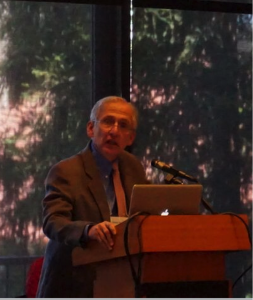
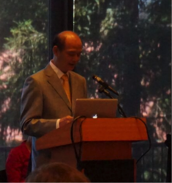

Almost 250 attended “The Chinese and the Iron Road: Building the Transcontinental” at Stanford University on June 6, 2015. The event, co-sponsored by the Chinese Railroad Workers in North America Project at Stanford University and the Chinese Historical Society of America (CHSA), commemorated the 150th anniversary of the employment of large numbers of Chinese laborers on the construction of the Central Pacific portion of the transcontinental railroad. The overflow crowd included more than 50 descendants of the railroad workers.
The event opened with welcoming remarks by Project Co-Director Professor Gordon H. Chang and CHSA’s Executive Director Sue Lee, as well as an overview of the Project’s work by Co-Director Professor Shelley Fisher Fishkin.
Richard Saller, Stanford Dean of the School of Humanities and Sciences, welcomed the audience to “this unprecedented event,” highlighting “the crucial role that the Chinese who built the Central Pacific Railroad played in creating the fortune with which Leland Stanford founded our university.” Dean Saller offered the important statement that “today marks the first time that Stanford University has formally honored their memory.” To those descendants in attendance he expressed “our appreciation of the grueling work your ancestors did to make the first railroad linking the nation’s east and west coasts possible.”
Chinese Consul General Luo Linquan noted that the participation of Chinese workers is “of great historic significance.” He observed, “Without their contribution, America’s development and progress as a nation would have been delayed by years.”
These railway workers are the predecessors of the early Chinese immigrants in California. They not only helped reshape the geographic and social landscape of the West, but also blazed a trail for the very existence and development of overseas Chinese living in the U.S. Their diligence, dedication, team spirit and commitment represent the traditions and personalities of the Chinese nation. They are pioneers for the people-to-people exchanges and friendship between China and the U.S.
Ambassador Luo emphasized the significance of good relations between the United States and the need for both countries “to build a new model of major-country relations featuring no conflict, no confrontation, mutual respect and win-win cooperation.”
Associate Director Dr. Hilton Obenzinger presented a narrative in word and image of Chinese participation in building the railroad. Professor Barbara Voss, director of the Project’s archaeology network, presented aspects of the work of historical archaeologists and plans to conduct more research along the railroad route. Available at the event was the newly released special issue of Historical Archaeology on the Chinese railroad workers, which presents articles on the work done so far. The event included the premiere of a new film ‘The Work of Giants” on the Chinese building the Summit Tunnel in the Sierras. Produced by Laurence Campling for Donner Memorial State Park, the film features archaeologist Scott Baxter and historian/railroad worker descendant Connie Young Yu touring the tunnel and remains of work camps as they relate the story of the difficult and dangerous construction of what was at that time an engineering marvel.
A moving highlight of the program was the introduction of railroad worker descendants. Filmmaker Barre Fong and Connie Young Yu presented excerpts of oral histories of families of descendants of railroad workers gathered as part of the joint effort of the Project and CHSA. Two descendants, Paulette Liang and Russell Low, mesmerized the audience with their family stories accompanied with photographs. Railroad worker descendant and musician and storyteller Charlie Chin performed about the Chinese and the railroad, including a re-interpretation of the old song “I’ve Been Working on the Railroad.”
The audience savored a hearty lunch and mingled to talk with descendants and view the outstanding seven-panel exhibit on the Chinese working on the railroad produced by the Project and designed by CHSA graphic designer Amy Lam. (The exhibit is now on display at the CHSA in San Francisco.) At the end of the program many joined in a guided tour of the campus and the university’s relationship to the Chinese workers by Berkeley graduate student Christopher Lowman, including a stop at the East Asia Library to enjoy a photographic exhibition, “The Chinese Railroad Workers Memorial Exhibit: Revising the Stories We Tell Ourselves,” curated by Stanford undergraduates Eve Simister and Noelle Herring and, finally, at the Cantor Arts Center an opportunity to view the famed Golden Spike that commemorated the completion of the railroad on May 10, 1869.

Richard Saller, Dean of Humanities and Sciences Stanford University

PRC Consul General Luo Linquan
Scrapbook of Images from The Chinese and the Iron Road: Building the Transcontinental (click to see full size render):
{kind=link}
{kind=link}
{kind=link}
{kind=link}
{kind=link}
{kind=link}
{kind=link}
{kind=link}
{kind=link}
{kind=link}
{kind=link}
{kind=link}
{kind=link}
{kind=link}
{kind=link}
{kind=link}
{kind=link}
{kind=link}
Remarks From the June 6, 2015 Event
Welcome from Stanford Dean Richard Saller
On behalf of Stanford University, it is a great pleasure to welcome all of you to this unprecedented event. The Chinese Railroad Workers in North America Project at Stanford was created in recognition of the crucial role that the Chinese who built the Central Pacific Railroad played in creating the fortune with which Leland Stanford founded our university.
Today marks the first time that Stanford University has formally honored their memory. We are delighted that a number of their descendants are here. On behalf of Stanford, I would like to mark our appreciation of the grueling work your ancestors did to make the first railroad linking the nation’s east and west coasts possible.
We are also pleased that official representatives of China are here as well. I welcome Ambassador Luo Linquan and your colleagues. The University is looking forward to hearing more from the Chinese Railroad Workers Project in the future.
Let me also take this opportunity to recognize and congratulate the leadership of this project: Shelley Fishkin and Gordon H. Chang, co-directors, and Dr. Hilton Obenzinger, the associate director.
The event is co-sponsored with the Chinese Historical Society of America: Erwin Tam, current CHSA board president, Connie Young Yu, emeritus board member, and Sue Lee, executive director.
Remarks by PRC Consul General Luo Linquan
Professor Richard Saller,
Professor Gordon H. Chang,
Professor Shelley Fisher Fishkin,
Leaders of Chinese History Society of America,
Dear friends, ladies and gentlemen,
It is my great pleasure to be with you at prestigious Stanford University to commemorate the 150th anniversary of the introduction of large number of Chinese workers into the construction of the western portion of the first transcontinental railway across the United States, and also to celebrate the wonderful research conducted by Chinese Railroad Workers in North America Project at Stanford and the Chinese History Society of America.
As Consul General of the People’s Republic of China in San Francisco, I’d like to take this opportunity to send our warm greetings to all the participants, scholars and researchers, volunteers and descendants of Chinese railroad workers on behalf of the Chinese Consulate General as well as in my own name. I am pleased to know that Professor He from Guangxi, China joins us in today’ celebration. Welcome you to San Francisco Bay Area.
Ladies and Gentlemen, 150 years ago, shortly after the United States began to build the first transcontinental railroad, it was faced with a labor shortage because the daunting circumstances had driven the Irish workers away. Then about 10 to 15 thousand Chinese workers were recruited into the construction work. At one time, Chinese workers accounted for 80% of all the railroad workers. They worked in extremely harsh, difficult and dangerous conditions far beyond our imagination. Thousands of them died during the construction due to either extreme weather or hazardous geographical conditions. It’s fair to say that it is the Chinese railroad workers who made the construction of the western part of the transcontinental railway possible. The Chinese workers’ participation in the railroad is of great historic significance. Without their contribution, America’s development and progress as a nation would have been delayed by years.
These railway workers are the predecessors of the early Chinese immigrants in California. They not only helped reshape the geographic and social landscape of the West, but also blazed a trail for the very existence and development of overseas Chinese living in the U.S. Their diligence, dedication, team spirit and commitment represent the traditions and personalities of the Chinese nation. They are pioneers for the people-to-people exchanges and friendship between China and the U.S.
Today, as a closer political, economic, and social relationship is being developed between China and the U.S., it is essential for us to recall and remember this dramatic episode in history.
Ladies and Gentlemen, today, the United States is the biggest developed country in the world while China stands as the biggest developing country and a rising power. The China-U.S. relationship is regarded as the most important bilateral relationship in the world. A good relationship not only meets the fundamental interests of our two peoples, but also contributes to peace, stability and development of the Asia-Pacific region and the world as a whole. And of course for this purpose, it takes two sides to work together.
As you may already know, upon the invitation of President Obama, Chinese President Xi Jinping will pay a state visit to the U.S. this September. Both leaders have agreed to build a new model of major-country relations featuring no conflict, no confrontation, mutual respect and win-win cooperation, and I firmly believe that President Xi’s coming visit will inject new momentum into our efforts to build the relationship.
Finally, I’d like to take this opportunity to salute to the Chinese Railroad Workers in North America Project at Stanford and Chinese History Society of America. It is through your project that the Chinese railroad workers’ contribution is and will be remembered by more and more people, both here in the U.S. and in China. I also appreciate the Center for East Asia Studies of Stanford for its efforts to strengthen academic and people-to-people exchanges with Chinese sides. I am sure that your work will certainly help inject new and positive energy in the current China-U.S. relationship. If we can be of any help to promote such exchanges, please feel free to let us know.
Thank you!